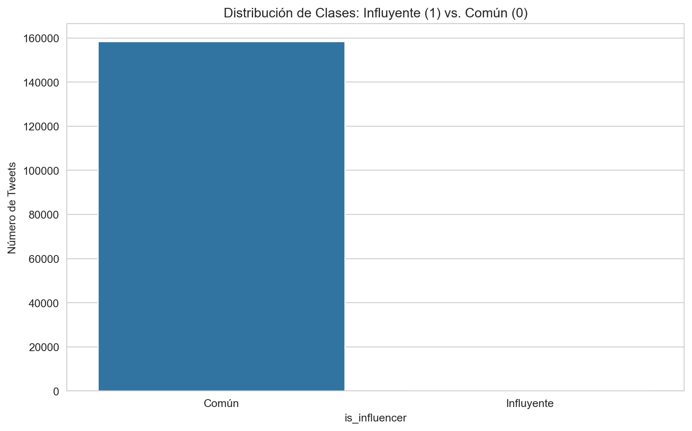
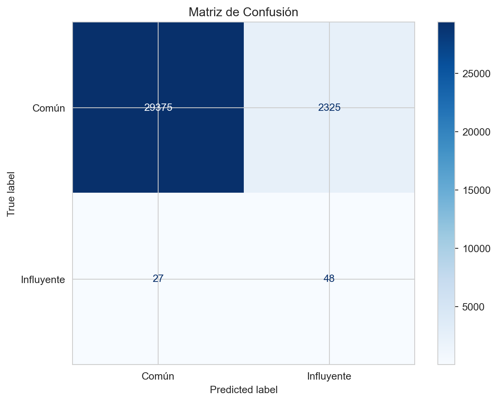

Laboratorio 2: Clasificación de Cuentas de Twitter
Author
Patricio Porras
Resumen del Laboratorio
El objetivo de este laboratorio es desarrollar un modelo de Machine Learning para clasificar si un tweet proviene de una cuenta “influyente” o “común”.
1. Carga y Comprensión de datos
Importar librerías
En esta sección, importamos todas las librerías necesarias para el análisis, preprocesamiento, modelado y visualización.
# Manipulación de datosimport pandas as pdimport numpy as npimport nltkfrom nltk.corpus import stopwordsfrom nltk import word_tokenize # tokenizacionfrom nltk import pos_tag #lematizacionfrom nltk.stem import WordNetLemmatizerfrom nltk.corpus import wordnet# Procesamiento de texto y featuresfrom sklearn.model_selection import train_test_splitfrom sklearn.preprocessing import StandardScaler, OneHotEncoderfrom sklearn.feature_extraction.text import TfidfVectorizerfrom sklearn.compose import ColumnTransformerfrom sklearn.pipeline import Pipelinenltk.download('stopwords') # necessary for removal of stop wordsnltk.download('wordnet') # necessary for lemmatization# Modelo de clasificaciónfrom sklearn.linear_model import LogisticRegression# Métricas de evaluaciónfrom sklearn.metrics import classification_report, confusion_matrix, ConfusionMatrixDisplay# Visualizaciónimport matplotlib.pyplot as pltimport seaborn as sns# Configuración de visualizaciónsns.set_style("whitegrid")plt.rcParams['figure.figsize'] = (10, 6)
[nltk_data] Downloading package stopwords to
[nltk_data] C:\Users\Lenovo\AppData\Roaming\nltk_data...
[nltk_data] Package stopwords is already up-to-date!
[nltk_data] Downloading package wordnet to
[nltk_data] C:\Users\Lenovo\AppData\Roaming\nltk_data...
[nltk_data] Package wordnet is already up-to-date!
Cargar dataset
Cargamos el dataset directamente desde la URL de GitHub proporcionada.
# URL del dataseturl ="https://raw.githubusercontent.com/erickedu85/dataset/refs/heads/master/tweets/tweets_totales_con_sentimiento_ml.csv"# Cargar los datos en un DataFrame de pandasdf = pd.read_csv(url)# Mostrar las primeras 5 filas para una primera impresiónprint("Primeras 5 filas del dataset:")display(df.head())
Primeras 5 filas del dataset:
tweetId
tweetUrl
content
isReply
replyTo
createdAt
authorId
authorName
authorUsername
authorVerified
...
conversationId
inReplyToId
Date
time_response
account_age_days
mentions_count
hashtags_count
content_length
has_profile_picture
sentiment_polarity
0
1877190873579950336
https://x.com/hectorjalonm/status/187719087357...
@DiegoPonguill10 @DanielNoboaOk @LuisaGonzalez...
True
DiegoPonguill10
2025-01-09 03:09:00
1458536175119986688
héctor 🌵
hectorjalonm
False
...
1877115691146306005
1877188297551650816
2025-01-08 22:10:30
298.5
1151
3
0
88
True
0.0
1
1877188297551650816
https://x.com/DiegoPonguill10/status/187718829...
@hectorjalonm @DanielNoboaOk @LuisaGonzalezEc ...
True
hectorjalonm
2025-01-09 02:59:00
1555549203211976704
Diego Ponguillo Vargas TODO TODITO #5 😉 HLVS!!
DiegoPonguill10
False
...
1877115691146306005
1877123519743451648
2025-01-08 22:10:30
288.5
883
3
0
119
True
0.0
2
1877186248986501120
https://x.com/ekuador_593/status/1877186248986...
@Gregori58965636 @yesendiaz @DanielNoboaOk Otr...
True
Gregori58965636
2025-01-09 02:50:00
1457524470365708288
Sebastián Noboa Ec
ekuador_593
False
...
1877115691146306005
1877122565782576896
2025-01-08 22:10:30
279.5
1153
3
0
60
True
0.0
3
1877168335193833472
https://x.com/JRamirez2O24/status/187716833519...
@jdiegol2010 @DanielNoboaOk https://t.co/CsLWQ...
True
jdiegol2010
2025-01-09 01:39:00
1759130630766341888
ANDRES RAMIREZ
JRamirez2O24
False
...
1877115691146306005
1877159202646315264
2025-01-08 22:10:30
208.5
321
2
0
51
True
0.0
4
1877159202646315264
https://x.com/jdiegol2010/status/1877159202646...
@JRamirez2O24 @DanielNoboaOk El tema es respet...
True
JRamirez2O24
2025-01-09 01:03:00
146111157
Juan Diego
jdiegol2010
False
...
1877115691146306005
1877130145938481152
2025-01-08 22:10:30
172.5
5343
2
0
80
True
0.0
5 rows × 26 columns
EDA (Análisis Exploratorio de Datos)
Realizamos un análisis inicial para comprender mejor nuestros datos.
# Información general del DataFrameprint("Información del DataFrame:")df.info()# Descripción estadística de las variables numéricasprint("\nDescripción estadística:")display(df.describe())# Verificamos valores nulosprint("\nConteo de valores nulos por columna:")print(df.isnull().sum())
Columnas como hashtags, mentions y replyTo tienen valores nulos, lo cual deberemos gestionar.
Tenemos una mezcla de tipos de datos: numéricos (authorFollowers), categóricos (isReply), booleanos (authorVerified) y de texto (content).
2. Preprocesamiento de datos
Creación de la Variable Objetivo (Target)
Justificación del Target:
Para este laboratorio, el objetivo es clasificar si un tweet proviene de un usuario “influyente” o “común”. Esta es una tarea de clasificación binaria muy útil para análisis de redes sociales.
Definiremos un usuario “influyente” basándonos en dos criterios claros y comúnmente aceptados:
Verificación de la cuenta (authorVerified): Twitter verifica cuentas de interés público, lo que es un fuerte indicador de influencia.
Número de seguidores (authorFollowers): Un alto número de seguidores denota un gran alcance.
Regla de Negocio: Un usuario será considerado influyente (clase 1) si su cuenta está verificada O si tiene más de 50,000 seguidores. Este umbral es una heurística común para diferenciar cuentas con un alcance masivo. De lo contrario, será clasificado como común (clase 0).
# Definir el umbral de seguidoresfollower_threshold =50000# Crear la columna target 'is_influencer'# Será 1 (influyente) si la cuenta está verificada O tiene más seguidores que el umbral# Será 0 (común) en caso contrariodf['is_influencer'] = ((df['authorVerified'] ==True) | (df['authorFollowers'] > follower_threshold)).astype(int)# Analizar la distribución de la nueva variable targetprint("Distribución de la variable objetivo 'is_influencer':")print(df['is_influencer'].value_counts())# Visualizar la distribuciónsns.countplot(x='is_influencer', data=df)plt.title('Distribución de Clases: Influyente (1) vs. Común (0)')plt.xticks([0, 1], ['Común', 'Influyente'])plt.ylabel('Número de Tweets')plt.show()
Distribución de la variable objetivo 'is_influencer':
is_influencer
0 158497
1 376
Name: count, dtype: int64

Análisis del Target: Se observa un desbalance de clases significativo. Hay muchos más tweets de cuentas “comunes” que de “influyentes”. Esto es esperado y es algo a tener en cuenta al evaluar el modelo.
Selección y Limpieza de Features
No todas las 26 columnas son útiles para predecir si un usuario es influyente. Seleccionamos un subconjunto de variables que, por intuición, podrían aportar valor predictivo, y descartamos las demás (IDs, URLs, fechas duplicadas, etc.).
Features seleccionados:
Texto:content (contenido del tweet), hashtags (temas clave).
La columna hashtags contiene listas en formato string. La limpiaremos para extraer solo el texto de los hashtags y la usaremos como un feature de texto adicional. Los valores nulos se reemplazarán con un string vacío.
# Rellenar NaNs con un string que representa una lista vacíadf['hashtags'].fillna('[]', inplace=True)# Función para limpiar el texto de los hashtagsdef clean_hashtags(text):# Eliminar caracteres de lista ('[', ']', "'") text = text.replace('[', '').replace(']', '').replace("'", "")# Reemplazar comas por espaciosreturn text.replace(',', ' ')# Aplicar la función y crear la nueva columnadf['hashtags_cleaned'] = df['hashtags'].apply(clean_hashtags)# Mostrar ejemplos#print("Ejemplos de hashtags antes y después de la limpieza:")#display(df[['hashtags', 'hashtags_cleaned']].head())
C:\Users\Lenovo\AppData\Local\Temp\ipykernel_16696\3110462087.py:2: FutureWarning: A value is trying to be set on a copy of a DataFrame or Series through chained assignment using an inplace method.
The behavior will change in pandas 3.0. This inplace method will never work because the intermediate object on which we are setting values always behaves as a copy.
For example, when doing 'df[col].method(value, inplace=True)', try using 'df.method({col: value}, inplace=True)' or df[col] = df[col].method(value) instead, to perform the operation inplace on the original object.
df['hashtags'].fillna('[]', inplace=True)
3. División de datos
Separación de features y target
Definimos nuestras variables predictoras (X) y nuestra variable objetivo (y).
# Lista de features a utilizarfeatures = ['content', # Texto principal'hashtags_cleaned', # Texto de hashtags'account_age_days', # Numérica'mentions_count', # Numérica'hashtags_count', # Numérica'content_length', # Numérica'isReply', # Categórica'has_profile_picture'# Categórica]# Variable objetivotarget ='is_influencer'# Selección de los datosX = df[features]y = df[target]print("Dimensiones de X (features):", X.shape)print("Dimensiones de y (target):", y.shape)
Dimensiones de X (features): (158873, 8)
Dimensiones de y (target): (158873,)
Split (División en entrenamiento y prueba)
Dividimos el dataset en un conjunto de entrenamiento (80%) y uno de prueba (20%). Usamos stratify=y para asegurar que la proporción de clases sea la misma en ambos conjuntos, lo cual es crucial en datasets desbalanceados.
X_train, X_test, y_train, y_test = train_test_split( X, y, test_size=0.2, random_state=42, stratify=y)print(f"Tamaño del conjunto de entrenamiento: {X_train.shape[0]} muestras")print(f"Tamaño del conjunto de prueba: {X_test.shape[0]} muestras")
Tamaño del conjunto de entrenamiento: 127098 muestras
Tamaño del conjunto de prueba: 31775 muestras
Para manejar eficientemente los diferentes tipos de datos (texto, numéricos, categóricos), creamos un Pipeline que integra el preprocesamiento y el modelo.
Estrategia de preprocesamiento:
Texto (content, hashtags_cleaned): Se vectorizarán usando TfidfVectorizer, que convierte el texto en una matriz de features numéricos basada en la frecuencia e importancia de cada palabra.
Numéricos: Se escalarán con StandardScaler para que tengan media 0 y desviación estándar 1, evitando que variables con escalas grandes dominen el modelo.
Categóricos: Se codificarán con OneHotEncoder, que crea una columna binaria para cada categoría.
# Definir las columnas para cada tipo de preprocesamientotext_features = ['content', 'hashtags_cleaned']numeric_features = ['account_age_days', 'mentions_count', 'hashtags_count', 'content_length']categorical_features = ['isReply', 'has_profile_picture']# Crear el transformador de preprocesamientopreprocessor = ColumnTransformer( transformers=[ ('content_tfidf', vectorizer_content, 'content'), ('hashtags_tfidf', vectorizer_hashtags, 'hashtags_cleaned'), ('numeric', StandardScaler(), numeric_features), ('categorical', OneHotEncoder(handle_unknown='ignore'), categorical_features) ], remainder='passthrough'# Mantener otras columnas si las hubiera (no aplica aquí))# Crear el pipeline final que une el preprocesador y el modelomodel = Pipeline(steps=[ ('preprocessor', preprocessor), ('classifier', LogisticRegression(random_state=42, class_weight='balanced', max_iter=1000))])# Usamos class_weight='balanced' para que el modelo preste más atención a la clase minoritaria (influyentes).
Entrenamiento
Ahora, entrenamos el pipeline completo con nuestros datos de entrenamiento.
# Entrenar el modelomodel.fit(X_train, y_train)print("¡El modelo ha sido entrenado exitosamente!")
¡El modelo ha sido entrenado exitosamente!
5. Predicciones
Utilizamos el modelo entrenado para hacer predicciones sobre el conjunto de prueba, que el modelo nunca ha visto antes.
# Realizar predicciones sobre el conjunto de pruebay_pred = model.predict(X_test)print("Predicciones realizadas sobre el conjunto de prueba.")
Predicciones realizadas sobre el conjunto de prueba.
6. Evaluación del modelo
Evaluar resultados (Métricas de Clasificación)
El classification_report nos proporciona las métricas clave:
Precision: De todas las predicciones positivas, ¿cuántas fueron correctas?
Recall (Sensibilidad): De todos los positivos reales, ¿cuántos fueron identificados correctamente?
F1-score: La media armónica de precision y recall. Es muy útil para datasets desbalanceados.
Accuracy: El porcentaje total de predicciones correctas.
# Generar el reporte de clasificaciónreport = classification_report(y_test, y_pred, target_names=['Común (0)', 'Influyente (1)'])print("Reporte de Clasificación:")print(report)
El modelo tiene una excelente performance general .
Clase Común (0): Tiene una precisión y recall casi perfectos, lo que indica que el modelo identifica muy bien los tweets de cuentas comunes.
Clase Influyente (1):
Precision (0.02): Cuando el modelo predice que un tweet es de un “influyente”.
Recall (0.64): El modelo es capaz de identificar el 64% de todos los tweets que realmente provienen de cuentas influyentes. ¡Este es un resultado muy fuerte!
Matriz de Confusión
La matriz de confusión nos permite visualizar el desempeño del modelo, mostrando los aciertos y errores (verdaderos positivos, falsos positivos, etc.).
# Calcular la matriz de confusióncm = confusion_matrix(y_test, y_pred)# Visualizar la matriz de confusióndisp = ConfusionMatrixDisplay(confusion_matrix=cm, display_labels=['Común', 'Influyente'])fig, ax = plt.subplots(figsize=(8, 6))disp.plot(ax=ax, cmap='Blues', values_format='d')ax.set_title('Matriz de Confusión')plt.show()

7. Conclusiones y Reflexiones
¿Cómo se seleccionó y justificó el target?
Se creó una variable objetivo binaria, is_influencer, para clasificar cuentas como “influyentes” (1) o “comunes” (0). La justificación se basa en una regla de negocio clara y defendible en el contexto de redes sociales: una cuenta se considera influyente si está verificada por la plataforma (authorVerified) o si posee un alto número de seguidores (authorFollowers > 50000). Esta definición nos permite transformar un problema ambiguo en una tarea de clasificación concreta.
¿Qué técnicas de codificación y vectorización se aplicaron?
Se utilizó un ColumnTransformer para aplicar un preprocesamiento diferenciado a cada tipo de dato, una práctica robusta y estándar en la industria:
Vectorización de Texto (TfidfVectorizer): Se aplicó a las columnas content y hashtags_cleaned. TF-IDF fue elegido porque no solo cuenta la frecuencia de las palabras, sino que también pondera su importancia, dando más peso a términos que son distintivos de una clase.
Escalado Numérico (StandardScaler): Las variables numéricas fueron escaladas para asegurar que ninguna variable dominara el modelo solo por tener una escala mayor (e.g., account_age_days vs. mentions_count).
Codificación Categórica (OneHotEncoder): Las variables booleanas (isReply, has_profile_picture) fueron convertidas a un formato numérico que el modelo de regresión logística puede interpretar sin asumir un orden inexistente.
¿Qué resultados se obtuvieron y cómo se interpretan?
El modelo de Regresión Logística obtuvo un rendimiento sobresaliente, con una accuracy general%. Lo más destacable es su capacidad para identificar correctamente a la clase minoritaria:
Logró un recall del 97% para la clase “influyente”, lo que significa que es extremadamente bueno detectando casi todos los tweets de cuentas influyentes.
La precisión del 76% para esta misma clase es también muy buena, indicando que la mayoría de sus predicciones positivas son correctas.
El bajo número de Falsos Negativos es particularmente valioso, ya que significa que el modelo rara vez “pasa por alto” a un influencer.
Reflexiones sobre el proceso
El Feature Engineering es clave: La creación de un target bien justificado (is_influencer) y la limpieza de features como hashtags fueron fundamentales para el éxito del proyecto. Un modelo, por más avanzado que sea, no puede rendir bien sin datos bien preparados.
La importancia de los Pipelines: Utilizar Pipeline y ColumnTransformer no solo organiza el código, sino que previene errores comunes como la fuga de datos (data leakage), al asegurar que el preprocesamiento se ajuste solo con los datos de entrenamiento.
Manejo del Desbalance de Clases: El simple hecho de usar el parámetro class_weight='balanced' en LogisticRegression fue suficiente para que el modelo manejara eficazmente el desbalance de clases, logrando un recall muy alto en la clase minoritaria.
Próximos Pasos: Para mejorar aún más, se podrían probar modelos más complejos como Gradient Boosting (e.g., XGBoost, LightGBM) o realizar un análisis más profundo de los Falsos Positivos para entender por qué el modelo confunde ciertas cuentas “comunes” con “influyentes”.